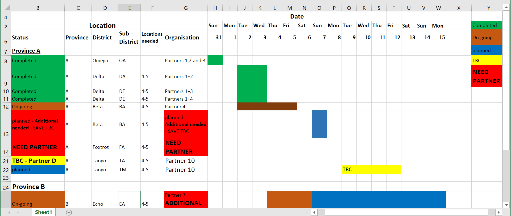

Warning: Missing `trust` will be set to FALSE by default for RDS in 2.0.0.Tidy data
Tidy data1

Each variable must have its own column
Each observation must have its own row
Each value must have its own cell
Excel data are often not tidy
- We might be used to seeing data in “human readability” form
- R cannot read this!

Let’s look at an example2 of data represented in different ways
We will look at a dataset measuring tuberculosis (TB) cases for different countries. We have information on the country, year, population, and number of TB cases:
Each column is one piece of information:
# A tibble: 6 × 4
country year cases population
<chr> <dbl> <dbl> <dbl>
1 Afghanistan 1999 745 19987071
2 Afghanistan 2000 2666 20595360
3 Brazil 1999 37737 172006362
4 Brazil 2000 80488 174504898
5 China 1999 212258 1272915272
6 China 2000 213766 1280428583Population and cases are “types” of counts:
# A tibble: 12 × 4
country year type count
<chr> <dbl> <chr> <dbl>
1 Afghanistan 1999 cases 745
2 Afghanistan 1999 population 19987071
3 Afghanistan 2000 cases 2666
4 Afghanistan 2000 population 20595360
5 Brazil 1999 cases 37737
6 Brazil 1999 population 172006362
7 Brazil 2000 cases 80488
8 Brazil 2000 population 174504898
9 China 1999 cases 212258
10 China 1999 population 1272915272
11 China 2000 cases 213766
12 China 2000 population 1280428583We look at the rate of TB cases:
# A tibble: 6 × 3
country year rate
<chr> <dbl> <chr>
1 Afghanistan 1999 745/19987071
2 Afghanistan 2000 2666/20595360
3 Brazil 1999 37737/172006362
4 Brazil 2000 80488/174504898
5 China 1999 212258/1272915272
6 China 2000 213766/1280428583Tidy data works best with R functions
- Tidy data allow us to transform, summarize, and plot our data very easily!
- Example: If we want to calculate the rate of TB for each country and year, we will be able to simply instruct R to calculate \[ \text{rate} = \dfrac{\text{cases}}{\text{population}}\]
Each column is one piece of information:
# A tibble: 6 × 4
country year cases population
<chr> <dbl> <dbl> <dbl>
1 Afghanistan 1999 745 19987071
2 Afghanistan 2000 2666 20595360
3 Brazil 1999 37737 172006362
4 Brazil 2000 80488 174504898
5 China 1999 212258 1272915272
6 China 2000 213766 1280428583Our HRS data are in tidy form
- Each column is a piece of information for an individual in the dataset
tibble(hrs_data) |> print(n = 8)# A tibble: 2,728 × 32
hhid pn id birthyr birthmo birthdate proxy coupled sex age_mo age_yr
<fct> <fct> <chr> <dbl> <dbl> <dbl> <fct> <fct> <fct> <dbl> <dbl>
1 552754 010 5527… 1967 9 2814 Resp… Not a … Fema… 665 55
2 555339 020 5553… 1966 7 2387 Resp… Couple… Fema… 676 56
3 559734 010 5597… 1967 3 2602 Resp… Couple… Male 663 55
4 558143 020 5581… 1973 10 5036 Resp… Couple… Male 600 50
5 554789 020 5547… 1950 7 -3153 Resp… Couple… Male 860 71
6 551018 010 5510… 1970 1 3667 Resp… Not a … Fema… 632 52
7 550516 010 5505… 1960 1 14 Resp… Not a … Male 749 62
8 559093 010 5590… 1971 4 4122 Resp… Couple… Male 621 51
# ℹ 2,720 more rows
# ℹ 21 more variables: ed <dbl>, degree <fct>, race_original <fct>,
# smoke_ever <fct>, smoke_now <fct>, drink <fct>, height <dbl>, srh <fct>,
# act_vig <fct>, bp <fct>, diab <fct>, cancer <fct>, lung <fct>, hrt <fct>,
# strk <fct>, psych <fct>, sleep <fct>, arth <fct>, cond_count <dbl>,
# cesd <dbl>, income <dbl>Wrap-up
- Tidy data are especially useful in R!
- We will see more of its advantages in later lessons
Resources
Footnotes
Source: R for Data Science. Grolemund and Wickham.↩︎
Source: R for Data Science. Grolemund and Wickham. Example pulled from Section 5.2↩︎